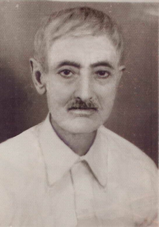

Ahmet Hüsrev Altýnbaþak (1899 -1977)

Ahmet Hüsrev 1899 yýlýnda Isparta’da doðdu. Ýlk eðitimini ailesinden aldý. Önce Ýdadî mektebine girdi ve burayý bitirdi. Birçok insan gibi, kendisi de eðitimini tamamlayamadan ara vermek durumunda kaldý. Çünkü, Osmanlý Devleti uzun yýllar devam eden savaþlara girmek zorunda kalmýþ ve bu savaþlarda eli silâh tutan hemen herkes cepheye koþmuþtu. Ahmet Hüsrev de diðer vatan evlâtlarý gibi savaþa katýldý. Kurtuluþ Savaþý sýrasýnda Yunanlýlara karþý açýlmýþ bulunan Batý Cephesi’nde bulundu ve düþmana karþý savaþtý.Kurtuluþ Savaþý’ndan sonra 1931 yýlýna gelinceye kadar geçen zaman zarfýnda Ahmet Hüsrev’in meþguliyeti hakkýnda fazla bir bilgi ve ayrýntý yoktur. 1931 yýlý ise hayatýnýn dönüm noktasýný oluþturacak ve çok büyük deðiþikliklere sahne olacaktýr. Bilindiði gibi, Bediüzzaman Hazretleri 1926 yýlýndan itibaren sürgün olarak Isparta’ya getirtilmiþ ve Barla’da zorunlu ikamete tabi tutulmuþtu. Bu sürgün, ayný zamanda iman hizmetinin tohumlarýnýn serpiþtirilmesinin ve Risâle-i Nurun neþrinin baþlangýcýný teþkil eder. Ispartalý olan Ahmet Hüsrev’in Bediüzzaman ve Risâle-i Nurla tanýþmasý ise, 1931 yýlýnda olmuþtur.
Ahmet Hüsrev, Bediüzzaman Hazretleri ile tanýþtýktan sonra mesaisinin büyük bir kýsmýný iman ve Kur’ân hizmetine adadý. Çok kýt imkânlar içinde yazýlmaya baþlanan Risâle-i Nurlarýn el yazýlarýyla çoðaltýlarak ülkenin muhtelif beldelerine gönderilmesi ve insanlara ulaþtýrýlmasý, dönemin en büyük görev ve hizmetlerinden biri idi. Hem okuma yazma bilen son derece az olduðu gibi, hem de bu iþe kendini vakfeden insanlar büyük bir baský ve hapsi de göðüslemek zorunda kalmaktaydýlar. Bu yazma iþinde büyük bir hizmeti ifa edenlerden birisi de kuþkusuz Ahmet Hüsrev oldu. O artýk, Risâle-i Nur kâtiplerinden biri idi.
Ahmet Hüsrev’in ifa ettiði en büyük hizmetlerden bir tanesi de tevafuklu Kur’ân-ý Kerim’i yazmasý oldu. Bediüzzaman Hazretlerinin arzu ve isteði doðrultusunda ve ayný zamanda tarifleri, yol göstermesi çerçevesinde Kur’ân-ý Kerim’i yazmaya baþladý. Zaten var olan ve o zamana kadar açýk bir þekilde bilinmeyen tevafuklarýn ortaya çýkarýlmasýna vesile oldu. Onun bu hizmetinden sonra tevafuklu Kur’ân-ý Kerim insanlarýn istifadesine sunulmuþ oldu. O günden itibaren insanlarýn Kur’ân’ý okumadan kaynaklanan huzur ve saadetleri bir kat daha arttý. Dikkatlerin Kur’ân’dan baþka taraflara kaydýrýlmaya çalýþýlan bir dönemde, bu hizmetin ifa edilmesi büyük hayýrlara vesile oldu. Ahmet Hüsrev Kur’ân-ý Kerim’i dokuz kez yazdý. Güzel hattýyla da ayný zamanda daha kolay okunmasýna vesile oldu.
Risâle-i Nurun elle yazýlýp çoðaltýldýðý ilk dönemde Ahmet Hüsrev’in çok büyük hizmeti oldu. Hattýnýn güzel olmasýnýn da etkisiyle Nurun önemli kâtiplerinden biri oldu. Bu hizmete atýldýktan ve yaptýðý iþlerden dolayý Bediüzzaman Hazretlerinin övgü ve iltifatlarýna mazhar oldu:
“Âhiret kardeþlerim ve çalýþkan talebelerim Hüsrev Efendi ve Refet Bey, Sözler namýndaki envâr-ý Kur’âniyede üç keramet-i Kur’âniyeyi hissediyorduk. Sizler dahi gayret ve þevkinizle bir dördüncüsünü ilâve ettirdiniz. Bildiðimiz üç ise: Birincisi: Telifinde fevkalâde suhulet ve sür’attir… On Dokuzuncu Mektup, iki üç günde ve her günde üç dört saat zarfýnda mecmuu on iki saat eder-kitapsýz, daðda, baðda telif edildi. Otuzuncu Söz, hastalýklý bir zamanda, beþ altý saatte telif edildi. Yirmi Sekizinci Söz olan Cennet bahsi, bir veya iki saatte, Süleyman’ýn dere bahçesinde telif edildi. Ben ve Tevfik ile Süleyman bu sürate hayrette kaldýk. Ve hâkezâ... Telifinde bu keramet-i Kur’âniye olduðu gibi... Üçüncü keramet-i Kur’âniye: Bunlarýn okunmasý dahi usanç vermiyor. Hususan ihtiyaç hissedilse, okundukça zevk alýnýyor, usanýlmýyor. Ýþte, siz dahi dördüncü bir keramet-i Kur’âniyeyi ispat ettiniz. Hüsrev gibi, kendine tembel diyen ve beþ senedir Sözleri iþittiði halde yazmaya cidden tembellik edip baþlamayan bir kardeþimiz, bir ayda on dört kitabý güzel ve dikkatli yazmasý, þüphesiz dördüncü bir keramet-i esrar-ý Kur’âniyedir…” (Mektubat, s. 343)
“Hüsrev gibi Nura müþtak ve dirayetli” (Lem’alar, s. 50), “Risâle-i Nur’un þakirtleri içinde Cenâb-ý Hakk’ýn nimetlerine mazhar bazý zatlar (Hüsrev, Refet gibi), iktirâný illetle iltibas etmiþler, Üstadýna fazla minnettarlýk gösteriyorlardý…” (Lem’alar, s. 138).
Bediüzzaman Hazretleri, kendisine mektup yazýp ismini Risâle-i Nurda zikrettiði gibi, muhtelif zamanlarda kendisinden de duygularýný ifade eden mektuplar almýþtýr: “Sevgili Üstadýmýz, Efendimizi, Garazkâr raporlarýyla hakkýmýzda Afyon adliyesini pek büyük bir dikkate sevk eden ve sekiz aydan beri þiddetli bir tazyik altýnda siz sevgili Üstadýmýzý yaþatan, biz talebelerinizle birlikte Afyon hapsinde temâdi-i mevkufiyetimize sebep olan ve Nurun kabil-i inkâr olmayan muciznümâ hakikatlerini hasûdâne nazarla mütalâa eden ehl-i vukuf ulemasýna, … o muhterem allâmelerin ehl-i imaný, hususan hamele-i Kur’ân’ý müdafaa ve muhafaza en büyük vazifeleri iken, Afyon adliyesini aleyhimize teþvik edip tahrik eden … Kur’ân’ýn en büyük hakikatlerini muhtevî Risâle-i Nur’u müdafaa etmek þöyle dursun, en tehlikeli vakitlerimizde cephe alan … imhânýza susayan insafsýz düþmanlarýnýzýn en dehþetli savletleri karþýsýnda … imdadýnýza yetiþmiþ, titreyen zeminle dâvânýzýn doðruluðunu tasdik etmiþ. Ýlâhî ve melekûtî bir kudretle mübarek kaleminizden çýkýp yükselen “Zafer bizimdir.” beþaretlerinizi ihtar ile, bizleri siz sevgili Üstadýmýza çok minnettar eylemiþtir. … Çok kusurlu talebeniz Hüsrev.” (Þuâlar, s. 457-58).
Bediüzzaman Hazretleri ile birlikte talebeleri de büyük sýkýntýlar çekmekte ve baskýlara maruz kalmaktaydýlar. Ahmet Hüsrev de bunlardan nasibini aldý. Sýrasýyla Eskiþehir (1935), Denizli (1944), Afyon (1948), Isparta (1960), Eskiþehir (1971)’de tutuklama ve muhakemelere maruz kaldý. Bursa, Bergama, Ýzmir ve Buca cezaevlerinde yedi yýl hapis yattý. 1899 yýlýnda baþlayan, 1931 yýlýndan itibaren iman ve Kur’an hizmetiyle devam eden dünya hayatý 1977 yýlý Ramazan ayýnda Ýstanbul’da nihayet buldu. Kendisi tarafýndan kurulan Hayrat Vakfý, geride býrakmýþ olduðu tevafuklu Kur’ân-ý Kerim’i neþretmeye ve bu güzel hizmeti insanlarýmýzýn hizmetine sunmaya devam etmektedir.